People
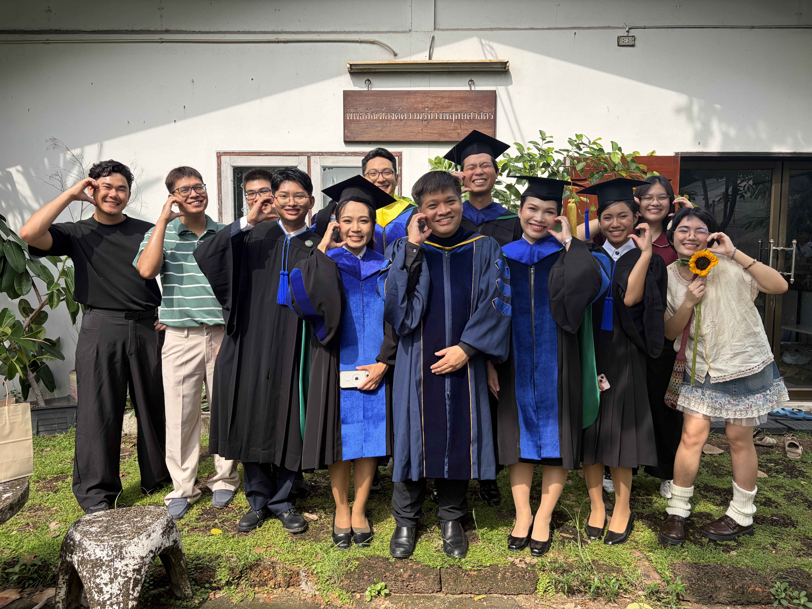
Principal Investigator
Ekaphan Kraichak (Bier), Ph.D.
Associate Professor & Chair, Department of Botany
My training is in the diversity and ecology of bryophytes and lichens. I have become more involved in phylogenetics, genetic diversity, and statistics in biology in general. R enthusiast!
- A.B., Biology (Honors) with minor in Education Studies, Bowdoin College, USA (2008)
- Ph.D., Integrative Biology, University of California, Berkeley, USA (2013)
- Postdoctoral Research, Field Museum of Natural History, Chicago, USA (2013 - 2014)
- Associate Professor, Department of Botany, Kasetsart University, Thailand (2015 - Present)
Master’s Students
Siwaporn Jansantia (Fah)
- Expertise
- Bryophytes, duckweeds, plant ecology
- Current research
- Effect of culture medium concentration on the growth of duckweed species
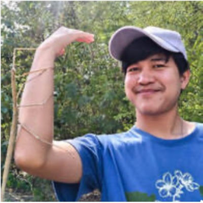
Suraphong Kosum (Mos)
- Expertise
- Duckweeds, plant taxonomy, biodiversity
- Current research
- Temporal changes and associated factors of duckweeds within natural ponds of Bangkok
I am interested in plant diversity, taxonomy, and genetics. I currently study ecology, with a special focus on duckweeds. I enjoy hiking and observing flowering plants, which I am particularly passionate about.
Peeraphat Thanasoot (Tonkhaw)
- Expertise
- Angiosperms, Phylogenetics
- Current research
- Past, Present, Future: Evolution of Wild Ginger (Zingiber) under Climatic Niches
Taratorn Munsuwan (Nam)
- Current research
- Effects of Cytokinin on Duckweed Growth
Undergraduate Students
Nannapat Lertritsirikul (Fai)
- Current research
- Commercial Bryophytes in Thailand
Phongsathon Intharadet (New)
- Current research
- Effects of Agricultural Land Uses on Lichen Community
PS
Paramate Sittikrai (Ko)
- Current research
- Effect of initial density of Wolffia on the population growth
AI
Anuphat Inliang (Time)
- Current research
- Effects of Drought Stress on Stomatal Density in Seedlings of Eleven Tree Species
Alumni
Postdoctoral Alumni
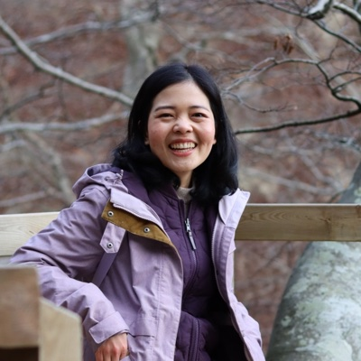
Natthawadi Wongthet (Praew), Ph.D.
Postdoctoral Researcher
- Expertise
- Phytochemistry, phylogenetics, bioactivities, Clausena
- Project
- An integrative perspective into the endemic diversity of Maerua siamensis
Class of 2025
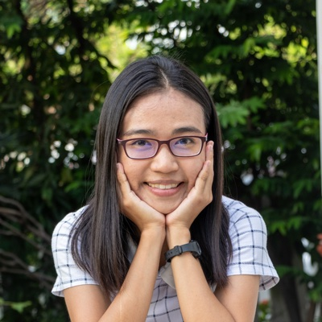
Kanokporn Promnikorn (Fonn)
Ph.D. Botany (2025) · M.S. Botany (2019)
- Expertise
- Species distribution models, geospatial analysis, agricultural data analysis
- Project (Ph.D.)
- Systematic Review, Meta-analysis, and the Uses of Satellite Data for Monitoring and Predicting Cassava Productivity
- Project (M.S.)
- Species distribution modeling of Vitex glabrata
I’m interested in applying agricultural data and statistical techniques to solve agricultural problems better. I’m curious to learn about using R for data manipulation, geospatial mapping, and modeling!
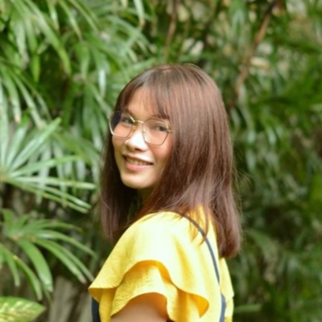
Athita Senayai (Aim)
Ph.D. Botany · Class of 2025
- Expertise
- Bryophytes, duckweeds
- Project
- Genetic and Biochemical Diversity, and Demographic Senescence of Some Duckweed Species in Thailand
I’ve been interested in various fields of biology since I was an undergraduate. I began studying bryophytes as a master’s student in Botany, and I now work on several aspects of duckweed species in Thailand. Apart from academic work, I enjoy badminton, hiking, camping, and cycling!
Akekachoke Buranaanun (M)
M.S. Botany · Class of 2025
- Expertise
- Ornithology, plant taxonomy, bryophytes, pteridophytes, citizen science
- Project
- Utilization of Bryophytes as Nest Materials in Passerine Birds in Doi Inthanon National Park
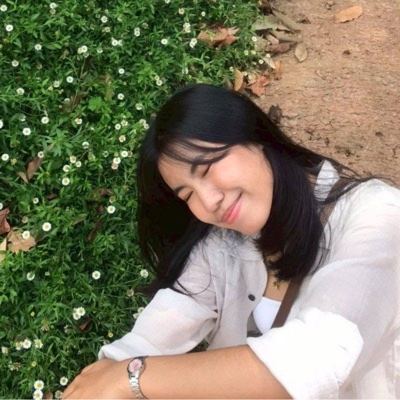
Onpreeya Kachakun (Fai)
B.S. Botany · Class of 2025
- Project
- Variation of morphology and anatomy within some species of Pogonatum in Thailand
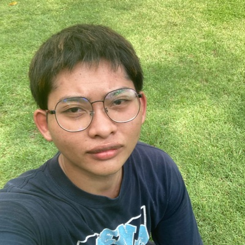
Sukkarin Klinklan (Lay)
B.S. Botany · Class of 2025
- Project
- Modeling of potential distribution of Neltuma juliflora (Sw.) Raf. in Southeast Asia and South Asia
Kanokporn Muangliang (Mew)
B.S. Botany · Class of 2025
- Project
- Species Distribution Modeling of Charophyte in Thailand
Supharada Sinual (Fern)
B.S. Botany · Class of 2025
- Project
- Monitoring Changes in Duckweed Abundance and Related Environmental Factors in Summer Season
MI
Miah Imduaikiat (Miah)
B.S. Biology, MUIC · Class of 2025
- Project
- DNA barcoding of charophyceaous species from Thailand
Class of 2024
Nitipat Trainitipong (Tae)
B.S. Botany · Class of 2024
- Project
- Developing a height-diameter allometry equation for Teak (Tectona grandis) in Thailand
TP
Tanapon Panyatanasub (Gordon)
B.S. Biology, MUIC · Class of 2024
- Project
- Molecular identification of commercial crickets from Thailand using mitochondrial cytochrome c oxidase subunit I sequence
Class of 2023
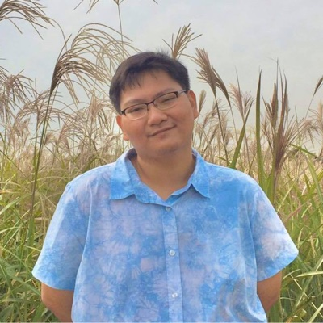
Patsakorn Tiwutanon (Pea)
Ph.D. Botany · Class of 2023
- Project
- Systematics of the moss genus Leucobryum in Thailand
Puwadol Chawengkul (Pooh)
M.S. Botany · Class of 2023
- Project
- Species distribution modeling of Leucobryum from SE Asia under future climate change
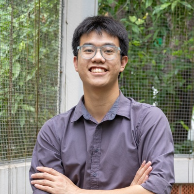
Nopparat Anantaprayoon (Opal)
M.S. Botany (2023) · B.S. Botany (2018)
- Project (M.S.)
- Diversification of the liverwort family Aneuraceae
- Project (B.S.)
- Integrative taxonomy of the genus Aneura in Thailand
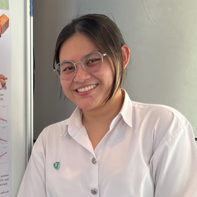
Thanpitcha Jenkit (Pran)
B.S. Botany · Class of 2023
- Project
- Comparing the efficiency of vegetation indices in predicting cassava yield
Class of 2022
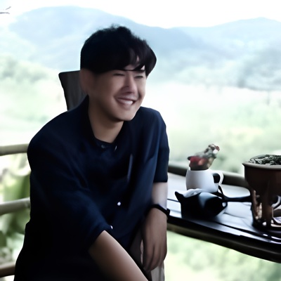
Sangsuree Thippawan (Art)
M.S. Botany (2022) · B.S. Botany (2018)
- Project (M.S.)
- Biomass modeling of seedlings from dry evergreen forest in Huai Kha Khaeng Wildlife Sanctuary
- Project (B.S.)
- Epiphytic lichens and bryophytes by host species and size in the Khao Chong plot
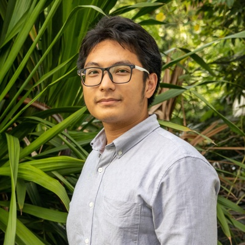
Napat Jantaraprasot (Pump)
M.S. Botany · Class of 2022
- Project
- Morphological and genetic diversity of Dioscorea cultivars in Thailand
Siwaporn Jansantia (Fah)
B.S. Botany · Class of 2022
- Project
- Terricolous bryophytes in Sakaerat Environmental Research Station
Thanyalak Phuthanakul (Nuch)
B.S. Botany · Class of 2022
- Project
- Stand structure and environments of white samet in Rayong Botanical Garden
Class of 2021
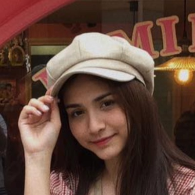
Phiraon Carcaiso (Julia)
B.S. Biology, MUIC · Class of 2021
- Project
- Potential for DNA barcoding in crickets
Chayaporn Lakmaung (Bell)
B.S. Botany · Class of 2021
- Project
- DNA barcoding of Thai Leptolejeunea
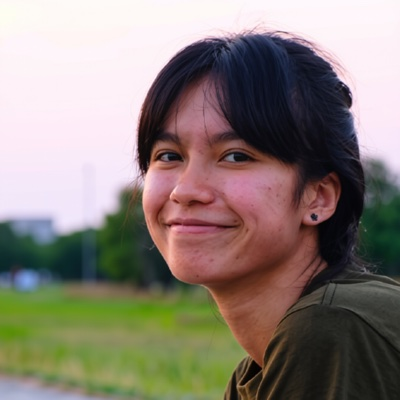
Kanchaphorn Ratchasong (Nan)
B.S. Botany · Class of 2021
- Project
- Ecology of urban duckweeds
Class of 2020
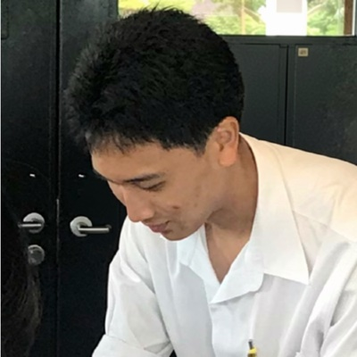
Kasidis Chaiyasit (France)
B.S. Biology, MUIC · Class of 2020
- Project
- Phylogenetic classification of the Leucobryum aduncum complex
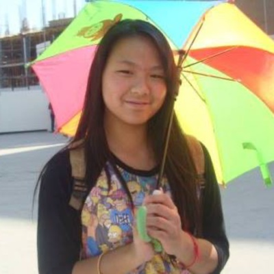
Paveetida Saengnuan (Namwan)
B.S. Biology, MUIC · Class of 2020
- Project
- Systematic review of factors contributing to cassava productivity
Class of 2019
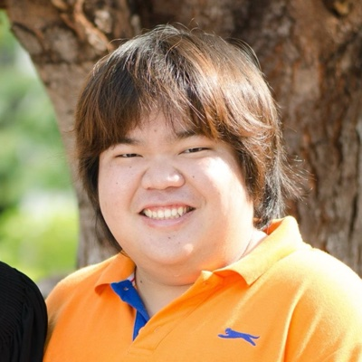
Purachet Phankien (Pu)
M.S. Botany · Class of 2019
- Project
- Species diversity of Leptolejeunea in Thailand
Wannaporn Eiamsri (Pack)
M.S. Botany · Class of 2019
- Project
- Diversity of bryophytes in Khao Chong
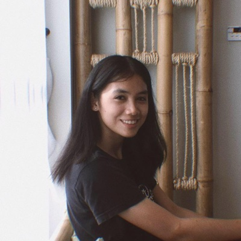
Sukanya Pumiretsuntorn (Som)
B.S. Botany · Class of 2019
- Project
- Species richness of bryophytes in Sap Cham Pa swamp forest
Sawanphathu Kongkawai (Fah)
B.S. Biology, MUIC · Class of 2019
- Project
- Molecular identification of Thai duckweeds by DNA barcoding
Ratdaporn Cheung (Minnie)
B.S. Biology, MUIC · Class of 2019
- Project
- DNA barcoding for species of stingless bees in Thailand
Class of 2018
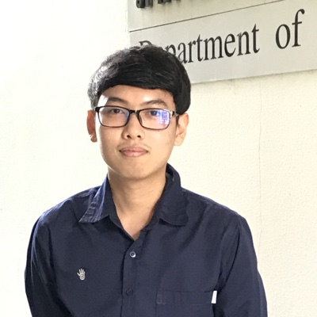
Pakawat Jarupand (Bom)
B.S. Botany · Class of 2018
- Project
- DNA barcoding of Sphagnum in Thailand
Class of 2017
Sorrasak Yodphaka (Peem)
M.S. Botany (2017) · B.S. Botany (2015)
- Project (M.S.)
- DNA barcoding of epiphytic bryophytes in Thailand
- Project (B.S.)
- Efficiency of DNA Barcoding of leafy liverworts Cololejeunea
Amarisa Noinakorn (Oum)
B.S. Botany · Class of 2017
- Project
- Association of epiphytic bryophytes and host characters
Class of 2016
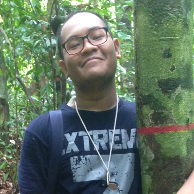
Panupong Kongwan (Mean)
B.S. Botany · Class of 2016
- Project
- Association of epiphytic lichens and host characters